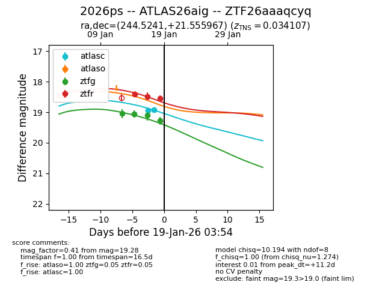
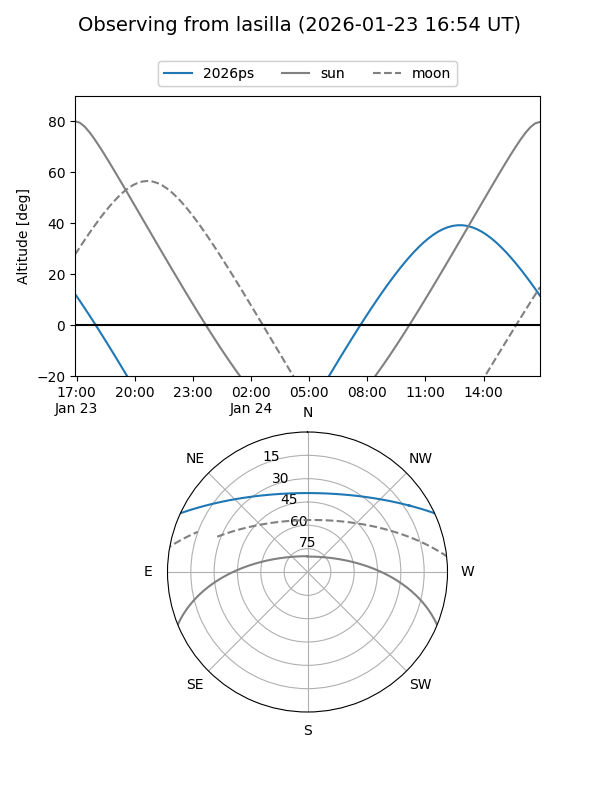
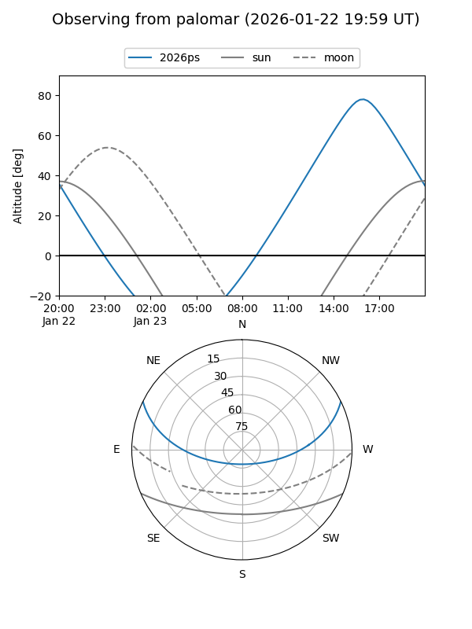
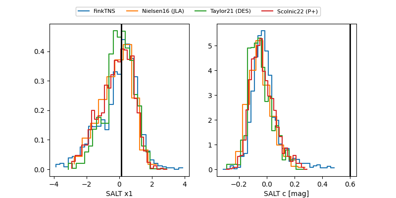

2026ps
Target 2026ps at 2026-01-14 23:50
Aliases and brokers:
FINK: link
Lasair: link
ALeRCE: link
TNS: link
YSE: link
alt names
ZTF26aaaqcyq (ztf,fink_ztf)
2026ps (tns,yse)
ATLAS26aig (atlas)
Coordinates:
equatorial (ra, dec) = 244.5241,+21.55597
equatorial (HMS+DMS) = 16:18:05.79,+21:33:21.48
galactic (l, b) = (37.9410,+42.91797)
Flags:
Photometry:
last ztfg=19.07
2 ztfg detections
Lightcurve

Visibility


Additional plots
